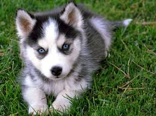

Información sobre Luna
- Edad: 4 meses
- Raza: Husky Siberiano
- Descripción: Luna es una hermosa husky con ojos azules cautivadores. Tiene un pelaje denso y suave en tonos blancos y grises. Es una perrita activa y aventurera que disfruta de largas caminatas y actividades al aire libre. A Luna le encanta explorar y siempre está lista para una nueva aventura. Es amigable y afectuosa, pero también independiente. Sería ideal para alguien que disfrute de la compañía de un perro activo y enérgico.
